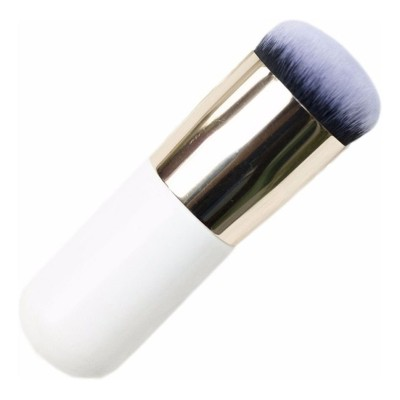
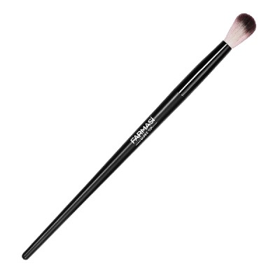
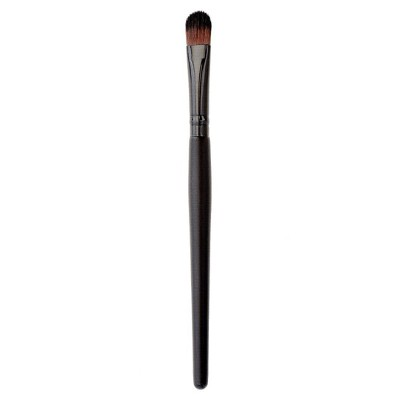
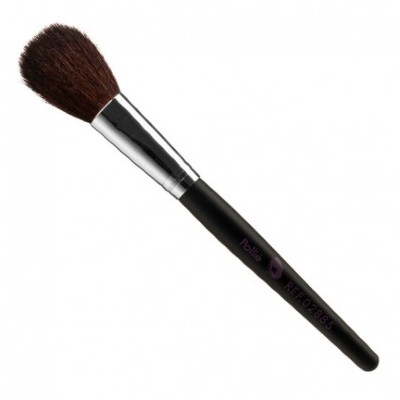
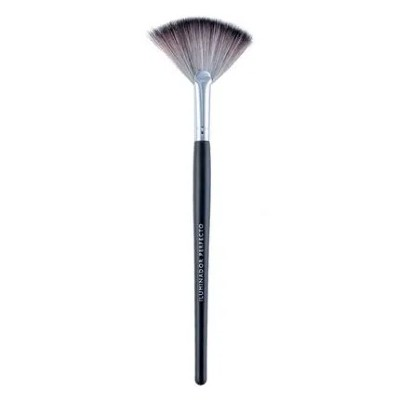
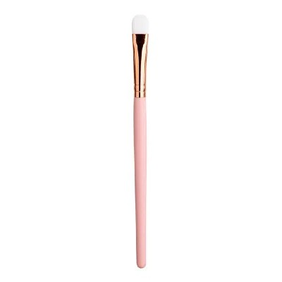
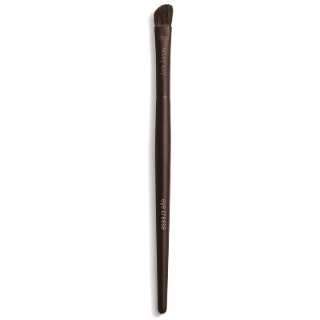
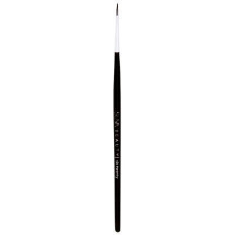

Brocha kabuki: es la brocha de rostro más útil porque sirve para aplicar
cualquier tipo de maquillaje en polvo. La tradicional es la de pequeño tamaño, la que se lleva en el
bolso, pero hoy en día han evolucionado y se diseñan con diferentes formas.

Mofeta: ideal para aplicar bases tanto fluidas como en polvo por todo el
rostro. Combina pelo sintético con pelo natural y da un acabado ligero. Hay quien prefiere una brocha
plana de rostro para aplicar la base de maquillaje, pero debes saber que proporciona un acabado más
cubriente y menos natural.

Brocha para corrector: son de tamaño medio, con punta plana y compacta. Ideal
para aplicar correctores fluidos o en crema.

Brocha de colorete: de tamaño medio / grande, puede ser biselada o redondeada
y debe tener el pelo suave y largo para difuminar bien el polvo.

Brocha abanico: es un gran aliado del polvo bronceador, del colorete y del
polvo iluminador. Con ella podrás marcar tus pómulos y mentón de manera impecable. Esta brocha te
ayudará a disminuir la línea de intersección entre el claro y el oscuro de tus pómulos, difuminando el
colorete y el polvo bronceador.

Brocha para sombras: aunque cualquiera pequeña sirve, lo suyo es usar una de
corte redondeado, pelo corto y denso.
Brocha para mezclar: de pelo largo y suave, para difuminar transiciones o
hacer ahumados.

Brocha biselada: sirven para aplicar sombras e iluminadores en todo el ojo.

Brocha de eyeliner:solo es imprescindible si te aplicas el delineador en gel.
Los eyeliner comerciales traen su propio pincel o rotulador aplicador.

Brocha doble para cejas: En cuestión de cejas es mejor no complicarse y optar
por una brocha o pincel dúo para cejas. Consigue un acabado natural y, la vez, profesional con un simple
pincel doble..

Peine para pestañas:Peina, separa las pestañas y quita los grumos de máscara
de pestañas. Además, hemos encontrado un truco de maquillaje que nos permite mantener el rizo de las
pestañas todo el día.